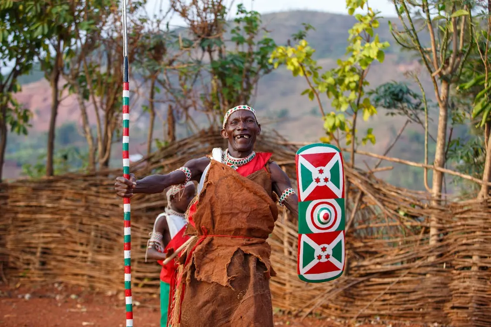
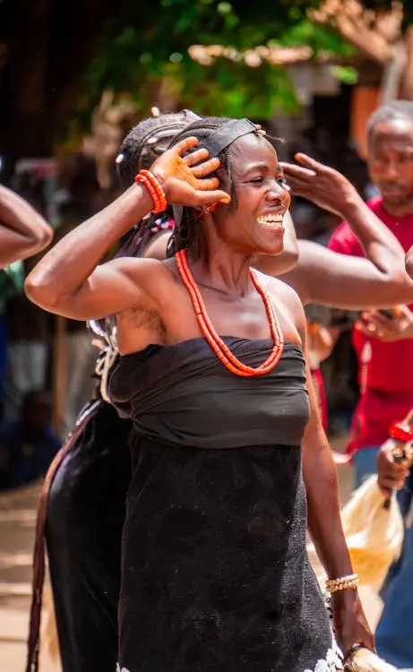
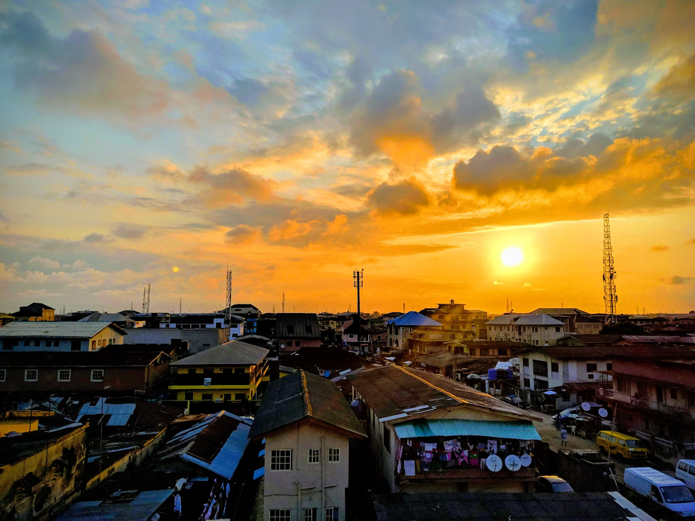
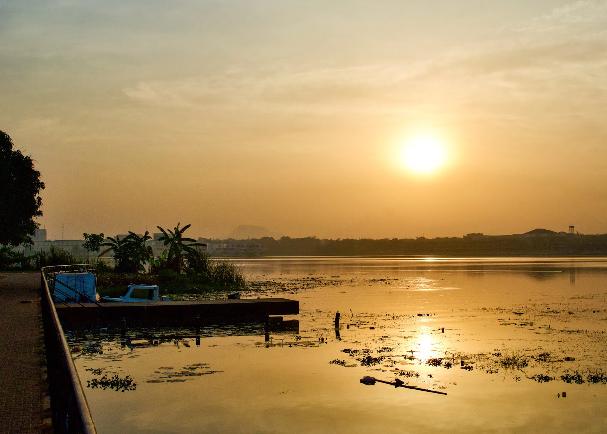
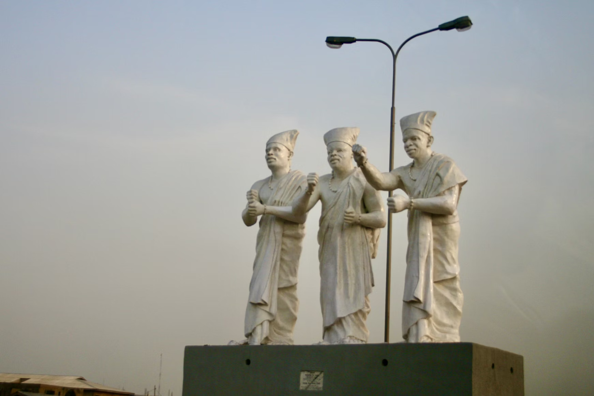

North Central


- North central
- Benue
- Kogi
- Kwara
- Nasarawa
- Niger
The Northcentral "Culture"
The North Central region of Nigeria is known for its rich and diverse cultural heritage. This region is home to a variety of ethnic groups, including the Tiv, Idoma, Nupe, and Gwari people, each with their unique traditions, languages, and customs. Traditional music and dance play a significant role in the cultural life of the North Central region, with various festivals and ceremonies showcasing the vibrant cultural expressions of the people. The region is also known for its traditional crafts, such as pottery, weaving, and beadwork, which are integral to the cultural identity of the communities.
In addition to its artistic expressions, the North Central region is renowned for its traditional cuisine, which features a variety of locally sourced ingredients and unique cooking methods. Popular dishes include pounded yam, egusi soup, and tuwo shinkafa, which are enjoyed by both locals and visitors. The region's cultural heritage is also reflected in its traditional attire, with colorful and intricately designed garments worn during special occasions and festivals. The North Central region's cultural diversity and rich traditions make it a vibrant and integral part of Nigeria's cultural landscape.
The Northcentral "People"
The people of the North Central region of Nigeria are known for their hospitality and communal lifestyle. They place a high value on family and community, often coming together to celebrate festivals, weddings, and other social events. The region is home to a variety of ethnic groups, each contributing to the rich cultural tapestry of the area. Traditional music, dance, and storytelling are integral parts of their cultural expression, with each ethnic group having its unique styles and traditions.
Education and agriculture are significant aspects of life in the North Central region. Many communities are involved in farming, producing crops such as yams, maize, and millet. Education is highly valued, with numerous schools and institutions providing opportunities for learning and personal development. The people of the North Central region are also known for their craftsmanship, creating beautiful pottery, textiles, and beadwork that reflect their cultural heritage. Their resilience and adaptability have allowed them to thrive in a diverse and dynamic environment.
The Northcentral "Geography"
The North Central region of Nigeria is characterized by a diverse and varied landscape. It features a mix of highlands, plateaus, and river valleys, contributing to its unique geographical makeup. The region is home to the Jos Plateau, which is known for its cooler climate and scenic beauty. The Benue River, one of Nigeria's major rivers, flows through the region, providing water resources for agriculture and other activities. The region's geography supports a range of agricultural activities, including the cultivation of crops such as yams, maize, and millet.
The North Central region also boasts significant mineral resources, including tin, limestone, and marble, which contribute to its economic activities. The presence of these natural resources has led to the development of mining industries in the area. Additionally, the region's diverse topography supports various ecosystems, including savannas, forests, and wetlands, which are home to a wide range of flora and fauna. The combination of its natural beauty, agricultural potential, and mineral wealth makes the North Central region an important and vibrant part of Nigeria.
North west

North west is representing both a geographic and a political region of the country's northwest
- North west
- Jigawa
- Kaduna
- Kano
- Katsina
- Kebbi
- Sokoto
- Zamfara
The Northwest "culture"
The North West region of Nigeria is renowned for its rich cultural heritage, deeply rooted in the traditions of the Hausa and Fulani ethnic groups. The region is famous for its vibrant festivals, such as the Durbar festival, which showcases traditional horse riding, music, and dance. The people of the North West are known for their intricate craftsmanship, particularly in leatherwork, pottery, and weaving. Traditional attire, such as the flowing robes and turbans worn by men and the colorful wrappers and headscarves worn by women, reflects the region's cultural identity and is often adorned during special occasions and ceremonies.
Music and dance play a significant role in the cultural life of the North West region. Traditional instruments, such as the talking drum and the kakaki (a long trumpet), are commonly used in musical performances. The region is also known for its rich culinary traditions, with dishes like tuwo shinkafa (rice pudding) and miyan kuka (baobab leaf soup) being popular among the locals. The North West's cultural heritage is further enriched by its oral traditions, with storytelling and proverbs being an integral part of the community's way of life. The region's cultural diversity and vibrant traditions make it a unique and essential part of Nigeria's cultural landscape.
The Northwest "People"
The people of the North West region of Nigeria are predominantly from the Hausa and Fulani ethnic groups, known for their rich cultural heritage and strong sense of community. They are renowned for their hospitality and warmth, often welcoming visitors with open arms and traditional greetings. The Hausa and Fulani people have a deep respect for their traditions and customs, which are evident in their daily lives, social structures, and celebrations.
Agriculture is a significant part of life in the North West region, with many communities engaged in farming and livestock rearing. The region is known for producing crops such as millet, sorghum, and groundnuts, as well as cattle and other livestock. The people of the North West are also skilled traders, with bustling markets that serve as important economic hubs for the region.
The Northwest Geography
The North West region of Nigeria is characterized by a diverse and expansive landscape, ranging from the arid Sahelian zone in the north to the more fertile savannah in the south. This region is home to the Sokoto River, one of the major rivers in Nigeria, which provides essential water resources for agriculture and sustains the local communities. The region's geography supports a variety of agricultural activities, including the cultivation of crops such as millet, sorghum, and groundnuts, as well as livestock rearing. The diverse topography of the North West, with its mix of plains, hills, and valleys, contributes to its unique natural beauty and ecological diversity.
In addition to its agricultural potential, the North West region is rich in mineral resources, including gold, limestone, and gypsum, which play a significant role in the local economy. The region's climate varies from the hot and dry conditions of the northern areas to the more temperate climate in the southern parts, making it suitable for different types of farming and economic activities. The presence of national parks and wildlife reserves in the North West also highlights the region's ecological significance, providing habitats for various species of flora and fauna. The combination of its natural resources, diverse landscapes, and cultural heritage makes the North West region an important and vibrant part of Nigeria.
North east


North east is representing both a geographic and a political region of the country's northeast
- North east
- Adamawa
- Bauchi
- Borno
- Gombe
- Taraba
- Yobe
The Northeast "Culture"
The North East region of Nigeria is known for its rich and diverse cultural heritage, deeply influenced by the traditions of the Kanuri, Fulani, and other ethnic groups. The region is famous for its vibrant festivals, such as the Durbar festival, which features traditional horse riding, music, and dance performances. The people of the North East are skilled artisans, renowned for their craftsmanship in pottery, weaving, and leatherwork. Traditional attire, including the flowing robes and headscarves worn by men and women, reflects the region's cultural identity and is often adorned during special occasions and ceremonies.
Music and dance play a significant role in the cultural life of the North East region. Traditional instruments, such as the talking drum and the xylophone, are commonly used in musical performances. The region is also known for its rich culinary traditions, with dishes like tuwo shinkafa (rice pudding) and miyan kuka (baobab leaf soup) being popular among the locals. The North East's cultural heritage is further enriched by its oral traditions, with storytelling and proverbs being an integral part of the community's way of life. The region's cultural diversity and vibrant traditions make it a unique and essential part of Nigeria's cultural landscape.
The Northeast "People"
The people of the North East region of Nigeria are known for their rich cultural heritage and strong sense of community. They are predominantly from the Kanuri, Fulani, and other ethnic groups, each contributing to the region's cultural tapestry. The people of the North East are known for their hospitality and communal lifestyle, often coming together to celebrate festivals, weddings, and other social events. Agriculture is a significant part of life in the North East, with many communities engaged in farming and livestock rearing. The region is known for producing crops such as millet, sorghum, and groundnuts. The people of the North East are also skilled traders, with bustling markets that serve as important economic hubs for the region. Their resilience and adaptability have allowed them to thrive in a diverse and dynamic environment.
The Northeast "Geography"
The North East region of Nigeria is characterized by a diverse and varied landscape, ranging from the arid Sahelian zone in the north to the more fertile savannah in the south. This region is home to the Chad Basin, which includes Lake Chad, one of the largest lakes in Africa. The lake provides essential water resources for agriculture, fishing, and other activities, supporting the livelihoods of many communities in the region. The region's geography supports a range of agricultural activities, including the cultivation of crops such as millet, sorghum, and groundnuts, as well as livestock rearing.
In addition to its agricultural potential, the North East region is rich in mineral resources, including limestone, gypsum, and kaolin, which contribute to its economic activities. The region's diverse topography, with its mix of plains, hills, and valleys, creates a unique natural beauty and ecological diversity. The presence of national parks and wildlife reserves in the North East highlights the region's ecological significance, providing habitats for various species of flora and fauna. The combination of its natural resources, diverse landscapes, and cultural heritage makes the North East region an important and vibrant part of Nigeria.
South south


south south It designates both a geographic and political region of the country's eastern coast.
- south south
- Akwa Ibom
- Bayelsa
- Cross River
- Delta
- Edo
- Rivers
The South South "Culture"
The South South region of Nigeria is renowned for its rich cultural heritage, deeply influenced by the traditions of the Ijaw, Ibibio, Efik, and other ethnic groups. The region is famous for its vibrant festivals, such as the Ekpe and Ekpo masquerade festivals, which feature traditional music, dance, and elaborate costumes. The people of the South South are skilled artisans, known for their craftsmanship in wood carving, pottery, and weaving. Traditional attire, including the colorful wrappers and headscarves worn by men and women, reflects the region's cultural identity and is often adorned during special occasions and ceremonies.
Music and dance play a significant role in the cultural life of the South South region. Traditional instruments, such as the talking drum and the xylophone, are commonly used in musical performances. The region is also known for its rich culinary traditions, with dishes like banga soup, edikang ikong, and afang soup being popular among the locals. The South South's cultural heritage is further enriched by its oral traditions, with storytelling and proverbs being an integral part of the community's way of life. The region's cultural diversity and vibrant traditions make it a unique and essential part of Nigeria's cultural landscape.
The south south "people"
The people of the South South region of Nigeria are known for their rich cultural heritage and strong sense of community. They are predominantly from the Ijaw, Ibibio, Efik, and other ethnic groups, each contributing to the region's cultural tapestry. The people of the South South are known for their hospitality and communal lifestyle, often coming together to celebrate festivals, weddings, and other social events. Agriculture and fishing are significant parts of life in the South South, with many communities engaged in farming and fishing activities. The region is known for producing crops such as cassava, yams, and plantains, as well as seafood from its coastal areas. The people of the South South are also skilled traders, with bustling markets that serve as important economic hubs for the region.
The South South region is also known for its vibrant arts and crafts, with local artisans creating beautiful wood carvings, pottery, and woven textiles that reflect their cultural heritage. Traditional music and dance are integral parts of their cultural expression, with each ethnic group having its unique styles and traditions. The people of the South South are also known for their resilience and adaptability, thriving in a diverse and dynamic environment. Their rich cultural heritage, strong sense of community, and economic activities make the South South region an important and vibrant part of Nigeria.
The South South "Geography"
The South South region of Nigeria is characterized by its diverse and dynamic geography, which includes coastal areas, river deltas, and lush rainforests. The region is home to the Niger Delta, one of the largest river deltas in the world, which is known for its complex network of rivers, creeks, and mangrove swamps. This unique landscape supports a rich biodiversity and provides essential resources for the local communities, including fishing and agriculture. The region's fertile soil and abundant water supply make it ideal for the cultivation of crops such as cassava, yams, and plantains.
In addition to its agricultural potential, the South South region is rich in natural resources, particularly oil and gas, which play a significant role in Nigeria's economy. The presence of these resources has led to the development of the oil industry, with numerous oil fields and refineries located in the region. The South South's geography also includes beautiful coastal areas and beaches, which attract tourists and contribute to the local economy. The combination of its natural resources, diverse landscapes, and cultural heritage makes the South South region an important and vibrant part of Nigeria.
south east


south east also representing both a geographic and political region of the country's inland southeast
- south east
- Abia
- Anambra
- Ebonyi
- Enugu
- Imo
The Southeast "Culture"
The South East region of Nigeria is renowned for its rich cultural heritage, deeply rooted in the traditions of the Igbo ethnic group. The region is famous for its vibrant festivals, such as the New Yam Festival, which celebrates the harvest and features traditional music, dance, and masquerades. The people of the South East are skilled artisans, known for their craftsmanship in wood carving, pottery, and weaving. Traditional attire, including the colorful wrappers and headscarves worn by men and women, reflects the region's cultural identity and is often adorned during special occasions and ceremonies.
Music and dance play a significant role in the cultural life of the South East region. Traditional instruments, such as the udu (a type of drum) and the ogene (a metal gong), are commonly used in musical performances. The region is also known for its rich culinary traditions, with dishes like ofe nsala (white soup) and abacha (African salad) being popular among the locals. The South East's cultural heritage is further enriched by its oral traditions, with storytelling and proverbs being an integral part of the community's way of life. The region's cultural diversity and vibrant traditions make it a unique and essential part of Nigeria's cultural landscape.
The southeast people
The people of the South East region of Nigeria are predominantly from the Igbo ethnic group, known for their rich cultural heritage and entrepreneurial spirit. They are renowned for their hospitality and strong sense of community, often coming together to celebrate festivals, weddings, and other social events. The Igbo people have a deep respect for their traditions and customs, which are evident in their daily lives, social structures, and celebrations. Agriculture and trade are significant parts of life in the South East, with many communities engaged in farming and commerce. The region is known for producing crops such as yam, cassava, and palm oil, as well as being a hub for various businesses and markets.
The South East region is also known for its vibrant arts and crafts, with local artisans creating beautiful wood carvings, pottery, and woven textiles that reflect their cultural heritage. Traditional music and dance are integral parts of their cultural expression, with each community having its unique styles and traditions. The people of the South East are also known for their resilience and adaptability, thriving in a diverse and dynamic environment. Their rich cultural heritage, strong sense of community, and economic activities make the South East region an important and vibrant part of Nigeria.
The southeast geography
The South East region of Nigeria is characterized by its diverse and picturesque geography, which includes rolling hills, lush rainforests, and fertile plains. The region is home to the Udi Hills and the Awgu Hills, which provide scenic landscapes and contribute to the area's natural beauty. The South East's geography supports a variety of agricultural activities, with the fertile soil and favorable climate allowing for the cultivation of crops such as yam, cassava, and palm oil. The region's rivers, including the Niger River, play a crucial role in providing water resources for farming and other activities, supporting the livelihoods of many communities.
In addition to its agricultural potential, the South East region is rich in mineral resources, including limestone, coal, and lead, which contribute to its economic activities. The region's diverse topography, with its mix of hills, valleys, and plains, creates a unique natural beauty and ecological diversity. The presence of national parks and wildlife reserves in the South East highlights the region's ecological significance, providing habitats for various species of flora and fauna. The combination of its natural resources, diverse landscapes, and cultural heritage makes the South East region an important and vibrant part of Nigeria.
South west


south west is representing both a geographic and a political region of the country's southwest
- South west
- Ekiti
- Lagos
- Ogun
- Ondo
- Osun
The Southwest "Culture"
The South West region of Nigeria is renowned for its rich cultural heritage, deeply rooted in the traditions of the Yoruba ethnic group. The region is famous for its vibrant festivals, such as the Eyo Festival in Lagos and the Osun-Osogbo Festival, which celebrate the region's history and spirituality with traditional music, dance, and elaborate costumes. The Yoruba people are skilled artisans, known for their craftsmanship in beadwork, pottery, and textile weaving. Traditional attire, including the colorful aso-oke fabric worn by men and women, reflects the region's cultural identity and is often adorned during special occasions and ceremonies.
Music and dance play a significant role in the cultural life of the South West region. Traditional instruments, such as the talking drum (dùndún) and the shekere (a type of rattle), are commonly used in musical performances. The region is also known for its rich culinary traditions, with dishes like amala, ewedu soup, and ofada rice being popular among the locals. The South West's cultural heritage is further enriched by its oral traditions, with storytelling, proverbs, and folktales being an integral part of the community's way of life. The region's cultural diversity and vibrant traditions make it a unique and essential part of Nigeria's cultural landscape.
The southwest "people"
The people of the South West region of Nigeria are predominantly from the Yoruba ethnic group, known for their rich cultural heritage and strong sense of identity. They are renowned for their hospitality, warmth, and communal lifestyle, often coming together to celebrate festivals, weddings, and other social events. The Yoruba people have a deep respect for their traditions and customs, which are evident in their daily lives, social structures, and celebrations. Agriculture, trade, and craftsmanship are significant parts of life in the South West, with many communities engaged in farming, commerce, and artisanal activities. The region is known for producing crops such as cocoa, kola nuts, and yams, as well as being a hub for various businesses and markets.
The South West region is also known for its vibrant arts and crafts, with local artisans creating beautiful beadwork, pottery, and woven textiles that reflect their cultural heritage. Traditional music and dance are integral parts of their cultural expression, with each community having its unique styles and traditions. The people of the South West are also known for their resilience and adaptability, thriving in a diverse and dynamic environment. Their rich cultural heritage, strong sense of community, and economic activities make the South West region an important and vibrant part of Nigeria.
The southwest Geography
The South West region of Nigeria is characterized by its diverse and picturesque geography, which includes coastal areas, forests, and rolling hills. The region is home to the Lagos Lagoon and the Ogun River, which provide essential water resources for agriculture, fishing, and other activities. The South West's geography supports a variety of agricultural activities, with the fertile soil and favorable climate allowing for the cultivation of crops such as cocoa, kola nuts, and yams. The region's coastal areas and beaches attract tourists and contribute to the local economy, making it a vibrant and dynamic part of Nigeria.
In addition to its agricultural potential, the South West region is rich in mineral resources, including limestone, granite, and bitumen, which play a significant role in the local economy. The region's diverse topography, with its mix of plains, hills, and valleys, creates a unique natural beauty and ecological diversity. The presence of national parks and wildlife reserves in the South West highlights the region's ecological significance, providing habitats for various species of flora and fauna. The combination of its natural resources, diverse landscapes, and cultural heritage makes the SouthWest region an important and vibrant part of Nigeria.